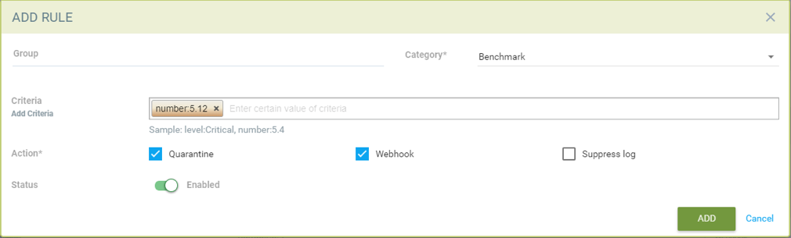
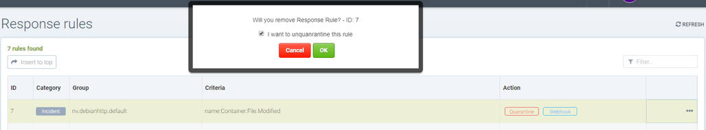

Antwortregeln
Richtlinie: Antwortregeln
Antwortregeln bieten eine flexible, anpassbare Regel-Engine zur Automatisierung von Antworten auf wichtige Sicherheitsereignisse. Auslöser können Sicherheitsereignisse, Ergebnisse von Schwachstellenscans, CIS-Benchmarks, Ereignisse zur Zugangssteuerung und allgemeine Ereignisse umfassen. Aktionen umfassen Containerquarantäne, Webhooks und Unterdrückung von Warnmeldungen.

Erstellen einer neuen Antwortregel mit den folgenden Angaben:
-
Group. Eine Regel wird auf eine Gruppe angewendet. Bitte beachten Sie den Abschnitt zur Laufzeit-Sicherheitsrichtlinie → Gruppen für weitere Informationen zu Gruppen und wie man bei Bedarf eine neue erstellt.
-
Kategorie. Dies ist die Art des Ereignisses, wie Sicherheitsereignis oder Ergebnis eines CVE-Schwachstellenscans.
-
Kriterien. Geben Sie ein oder mehrere Kriterien an. Jede Kategorie hat unterschiedliche Kriterien, die angewendet werden können. Zum Beispiel nach dem Ereignisnamen, der Schwere oder der Mindestanzahl an hohen CVEs.
-
Aktion. Wählen Sie eine oder mehrere Aktionen aus. Die Quarantäne blockiert den gesamten Netzwerkverkehr in und aus einem Container. Webhook erfordert, dass ein Webhook-Endpunkt in den Einstellungen → Konfiguration definiert wird. Die Protokollunterdrückung verhindert, dass dieses Ereignis in den Benachrichtigungen protokolliert wird.

|
Alle Antwortregeln werden bewertet, um festzustellen, ob sie den Bedingungen/Kriterien entsprechen. Wenn mehrere Regelübereinstimmungen vorliegen, werden die jeweiligen Aktionen ausgeführt. Dies unterscheidet sich vom Verhalten der Netzwerkregeln, die von oben nach unten bewertet werden und nur die erste übereinstimmende Regel ausgeführt wird. |
Zusätzliche Ereignisse und Aktionen werden von SUSE® Security in zukünftigen Versionen weiterhin hinzugefügt.
Detaillierte Konfiguration für Antwortregeln
Antwortregeln ermöglichen automatisierte Antworten wie Quarantäne, Webhook und Protokollunterdrückung basierend auf bestimmten Sicherheitsereignissen. Derzeit können die in der Antwortregel definierten Ereignisse Ereignisprotokolle, Sicherheitsereignisprotokolle sowie CVE (Schwachstellenscan) und CIS-Benchmarkberichte umfassen. Antwortregeln werden in allen Modi angewendet: Entdecken, Überwachen und Schützen, und das Verhalten ist für alle 3 Modi gleich.
Aktionen aus mehreren Regeln werden angewendet, wenn ein Ereignis mehreren Regeln entspricht. Jede Regel kann mehrere Aktionen und mehrere Übereinstimmungskriterien haben. Alle definierten Aktionen werden auf Container angewendet, wenn Ereignisse den Kriterien der Antwortregel entsprechen. Im Falle einer Übereinstimmung für Host (nicht Container) Ereignisse werden derzeit die Aktionen Webhook und Protokollunterdrückung unterstützt.
Es sind 6 Standardantwortregeln enthalten, die mit SUSE® Security geliefert werden und auf den Status ‘disabled,’ gesetzt sind, eine für jede Kategorie. Benutzer können entweder eine Standardregel anpassen, um ihren Anforderungen zu entsprechen, oder neue Regeln erstellen. Stellen Sie sicher, dass alle Regeln aktiviert sind, die angewendet werden sollen.

Verwendung mehrerer Kriterien in einer einzelnen Regel
Die Logik zur Übereinstimmung mehrerer Kriterien in einer Antwortregel lautet:
-
Für verschiedene Kriterienarten (z. B. name:Network.Violation, name:Process.Profile.Violation) innerhalb einer einzigen Regel wenden Sie 'und' an.
Aktionen
-
Der Container — wird unter Quarantäne gestellt. Beachten Sie, dass Quarantäne bedeutet, dass der gesamte Netzwerkverkehr blockiert ist. Der Container bleibt bestehen und läuft weiter - nur ohne Netzwerkverbindungen. Kubernetes wird keinen Container starten, um einen quarantänisierten Container zu ersetzen, da der API-Server weiterhin in der Lage ist, den Container zu erreichen.
-
Webhook - ein generiertes Webhook-Protokoll.
-
suppress-log — Protokoll wird unterdrückt - sowohl Syslog als auch Webhook-Protokoll.
|
Erstellen einer Antwortregel für Sicherheitsereignisprotokolle.
-
Klicken Sie auf "Nach oben einfügen", um die Regel an die Spitze einzufügen.
-
Wählen Sie einen Namen für die Dienstgruppe, wenn die Regel auf eine bestimmte Dienstgruppe angewendet werden soll.
-
Wählen Sie die Kategorie als Sicherheitsereignis.
-
Fügen Sie Kriterien für das Ereignisprotokoll hinzu, um als übereinstimmendes Kriterium einbezogen zu werden.
-
Wählen Sie die anzuwendenden Aktionen Quarantäne, Webhook oder Protokollunterdrückung.
-
Aktivieren Sie den Status.
-
Die Protokollebenen oder die Prozessnamen können als weitere übereinstimmende Kriterien verwendet werden.
Beispielregel, um den Container unter Quarantäne zu stellen und einen Webhook zu senden, wenn das Paket im nv.alpinepython.default-Container aktualisiert wird.


Erstellen einer Antwortregel für Ereignisprotokolle
-
Klicken Sie auf "Nach oben einfügen", um die Regel an die Spitze einzufügen.
-
Wählen Sie einen Namen für die Dienstgruppe, wenn die Regel auf eine bestimmte Dienstgruppe angewendet werden soll.
-
Wählen Sie die Kategorie des Ereignisses
-
Fügen Sie den Namen des Ereignisprotokolls hinzu, der als Übereinstimmungskriterium einbezogen werden soll
-
Wählen Sie die anzuwendenden Aktionen - Quarantäne, Webhook oder Protokoll unterdrücken
-
Aktivieren Sie den Status.
-
Das Protokollniveau kann als weiteres Übereinstimmungskriterium verwendet werden


Erstellen einer Antwortregel für die Kategorie CVE-Bericht (Protokollebene und Berichtsname als Übereinstimmungskriterium)
-
Klicken Sie auf "Nach oben einfügen", um die Regel an die Spitze einzufügen.
-
Wählen Sie einen Namen für die Dienstgruppe, wenn die Regel auf eine bestimmte Dienstgruppe angewendet werden soll.
-
Wählen Sie die Kategorie 'CVE-Bericht'
-
Fügen Sie das Protokollniveau als Übereinstimmungskriterium oder CVE-Report-Typ hinzu
-
Wählen Sie die anzuwendenden Aktionen Quarantäne, Webhook oder Protokoll unterdrücken (Quarantäne ist nicht anwendbar für Registry-Scans)
-
Aktivieren Sie den Status.
Beispiel-CVE-Report-Typen, die für die Antwortregel der Kategorie CVE-Report ausgewählt werden können

Stellen Sie den Container unter Quarantäne und senden Sie einen Webhook, wenn die Ergebnisse des Schwachstellenscans mehr als 5 hochgradige CVE-Schwachstellen für diesen Container enthalten.


Erstellen einer Antwortregel für CIS-Benchmarks (Protokollebene und Benchmark-Nummer als Übereinstimmungskriterien)
-
Klicken Sie auf "Nach oben einfügen", um die Regel an die Spitze einzufügen.
-
Wählen Sie den Namen der Dienstgruppe, wenn die Regel für eine bestimmte Dienstgruppe angewendet werden soll
-
Wählen Sie die Kategorie Benchmark
-
Fügen Sie die Protokollebene als Übereinstimmungskriterium oder Benchmark-Nummer hinzu, z.B. “5.12” Stellen Sie sicher, dass das Root-Dateisystem des Containers als schreibgeschützt gemountet ist
-
Wählen Sie die anzuwendenden Aktionen Quarantäne, Webhook und Protokollunterdrückung (Quarantäne ist nicht anwendbar für den Host-Docker- und Kubernetes-Benchmark).
-
Aktivieren Sie den Status.

Heben Sie die Quarantäne eines Containers auf, indem Sie die Antwortregel löschen
-
Sie möchten möglicherweise die Quarantäne eines Containers aufheben, wenn er von einer Antwortregel quarantiniert wurde
-
Löschen Sie die Antwortregel, die dazu geführt hat, dass der Container quarantiniert wurde, die im Ereignisprotokoll gefunden werden kann
-
Wählen Sie die Option 'Quarantäne aufheben', um den Container nach dem Löschen der Regel aus der Quarantäne zu befreien.
Anzeigen der Regel-ID, die für die Quarantäne des Containers verantwortlich ist (in Benachrichtigungen → Ereignisse)

Popup zur Aufhebung der Quarantäne, wenn die entsprechende Antwortregel gelöscht wird
Aktivieren Sie das Kontrollkästchen, um alle Container, die von dieser Regel in Quarantäne gestellt wurden, wieder freizugeben.

Vollständige Liste der kategorisierten Kriterien, die für Antwortregeln konfiguriert werden können
Beachten Sie, dass einige Kriterien einen Wert erfordern (z.B. cve-high:1, name:D.5.4, level:critical), der durch einen Doppelpunkt getrennt ist, während andere vordefiniert sind und im Dropdown angezeigt werden, wenn Sie mit der Eingabe eines Kriteriums beginnen.
Ereignisse
Container.Start
Container.Stop
Container.Remove
Container.Secured
Container.Unsecured
Enforcer.Start
Enforcer.Join
Enforcer.Stop
Enforcer.Disconnect
Enforcer.Connect
Enforcer.Kicked
Controller.Start
Controller.Join
Controller.Leave
Controller.Stop
Controller.Disconnect
Controller.Connect
Controller.Lead.Lost
Controller.Lead.Elected
User.Login
User.Logout
User.Timeout
User.Login.Failed
User.Login.Blocked
User.Login.Unblocked
User.Password.Reset
User.Resource.Access.Denied
RESTful.Write
RESTful.Read
Scanner.Join
Scanner.Update
Scanner.Leave
Scan.Failed
Scan.Succeeded
Docker.CIS.Benchmark.Failed
Kubenetes.CIS.Benchmark.Failed
License.Update
License.Expire
License.Remove
License.EnforcerLimitReached
Admission.Control.Configured // for admission control
Admission.Control.ConfigFailed // for admission control
ConfigMap.Load // for initial Config
ConfigMap.Failed // for initial Config failure
Crd.Import // for crd Config import
Crd.Remove // for crd Config remove due to k8s miss
Crd.Error // for remove error crd
Federation.Promote // for multi-clusters
Federation.Demote // for multi-clusters
Federation.Join // for joint cluster in multi-clusters
Federation.Leave // for multi-clusters
Federation.Kick // for multi-clusters
Federation.Policy.Sync // for multi-clusters
Configuration.Import
Configuration.Export
Configuration.Import.Failed
Configuration.Export.Failed
Cloud.Scan.Normal // for cloud scan nomal ret
Cloud.Scan.Alert // for cloud scan ret with alert
Cloud.Scan.Fail // for cloud scan fail
Group.Auto.Remove
Agent.Memory.Pressure
Controller.Memory.Pressure
Kubenetes.{product-name}.RBAC
Group.Auto.Promote
User.Password.AlertVorfälle (Sicherheitsereignis)
Host.Privilege.Escalation
Container.Privilege.Escalation
Host.Suspicious.Process
Container.Suspicious.Process
Container.Quarantined
Container.Unquarantined
Host.FileAccess.Violation
Container.FileAccess.Violation
Host.Package.Updated
Container.Package.Updated
Host.Tunnel.Detected
Container.Tunnel.Detected
Process.Profile.Violation // container
Host.Process.Violation // hostBedrohungen (Sicherheitsereignis)
TCP.SYN.Flood
ICMP.Flood
Source.IP.Session.Limit
Invalid.Packet.Format
IP.Fragment.Teardrop
TCP.SYN.With.Data
TCP.Split.Handshake
TCP.No.Client.Data
TCP.Small.Window
TCP.SACK.DDoS.With.Small.MSS
Ping.Death
DNS.Loop.Pointer
SSH.Version.1
SSL.Heartbleed
SSL.Cipher.Overflow
SSL.Version.2or3
SSL.TLS1.0or1.1
HTTP.Negative.Body.Length
HTTP.Request.Smuggling
HTTP.Request.Slowloris
DNS.Stack.Overflow
MySQL.Access.Deny
DNS.Zone.Transfer
ICMP.Tunneling
DNS.Type.Null
SQL.Injection
Apache.Struts.Remote.Code.Execution
DNS.Tunneling
K8S.externalIPs.MitMCompliance
Compliance.Container.Violation
Compliance.ContainerFile.Violation
Compliance.Host.Violation
Compliance.Image.Violation
Compliance.ContainerCustomCheck.Violation
Compliance.HostCustomCheck.Violation
Compliance.Test.Name // D.[1-5].*CVE-Bericht
ContainerScanReport
HostScanReport
RegistryScanReport
PlatformScanReport
cve-name
cve-high
cve-medium
cve-high-with-fix // cve-high-with-fix:N (fixed high vul.>N) cve-high-with-fix:N/D (fixed high vul.>N and reported more than D days ago)